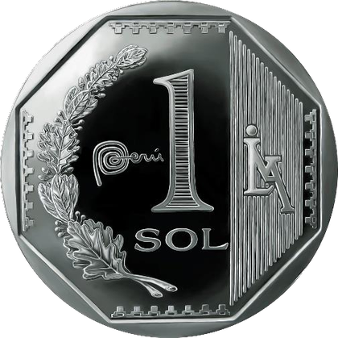
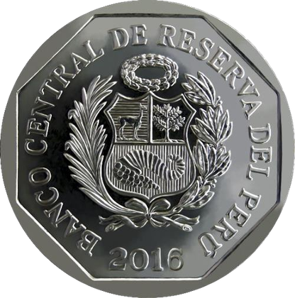
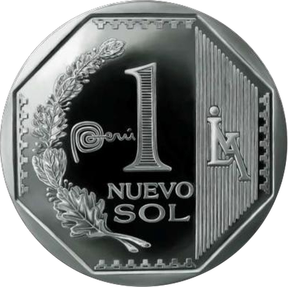
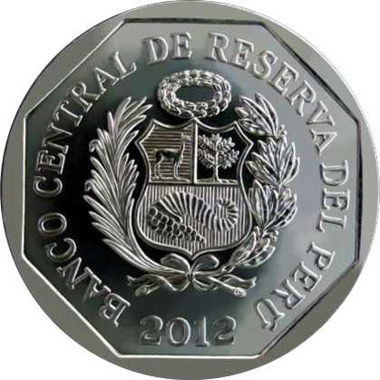
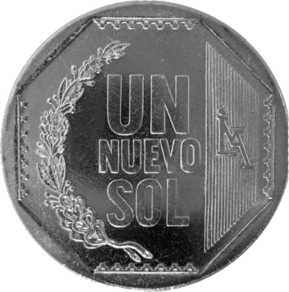
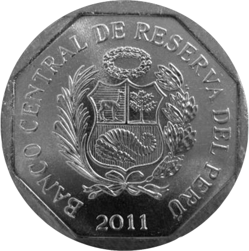

La moneda de S/ 1.00 ha tenido tres diseños a lo largo de su historia.


Reverso: En la parte central se muestra la denominación de la moneda en número (1), el logotipo de la "Marca País Perú" y debajo la unidad monetaria SOL. También se muestra el logotipo de la Casa Nacional de Moneda sobre un diseño geométrico de líneas verticales, así como dos tallos curvos de laurel y roble entremezclados y un polígono inscrito de ocho lados.
Anverso: Al centro el Escudo de Armas del Perú y alrededor la leyenda "Banco Central de Reserva del Perú", el año de acuñación y un polígono inscrito de ocho lados.
| Aleación | Diámetro (mm) | Peso (g) | Canto |
|---|---|---|---|
| Alpaca | 25,50 | 7,32 | Estriado continuo |


Esta moneda presenta en el reverso un tallo curvo con hojas de laurel y roble entremezcladas y el logotipo de la Casa Nacional de Moneda sobre un diseño geométrico de líneas verticales. Asimismo, cuenta con el logotipo de la Marca País Perú y la denominación en número al centro de la moneda.
En el anverso lleva el Escudo de Armas del Perú y alrededor la leyenda "BANCO CENTRAL DE RESERVA DEL PERÚ" y el año de acuñación.
| Aleación | Diámetro (mm) | Espesor (mm) | Peso (g) | Canto |
|---|---|---|---|---|
| Alpaca | 25,50 | 1,92 | 7,32 | Estriado |


Esta moneda presenta en el reverso un tallo curvo con hojas de laurel y roble entremezcladas y el logotipo de la Casa Nacional de Moneda sobre un diseño geométrico de líneas verticales.
En el anverso lleva el Escudo de Armas del Perú y alrededor la leyenda "BANCO CENTRAL DE RESERVA DEL PERÚ" y el año de acuñación.
| Aleación | Diámetro (mm) | Espesor (mm) | Peso (g) | Canto |
|---|---|---|---|---|
| Alpaca | 25,50 | 1,92 | 7,32 | Estriado |